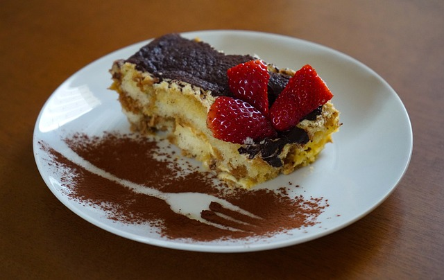
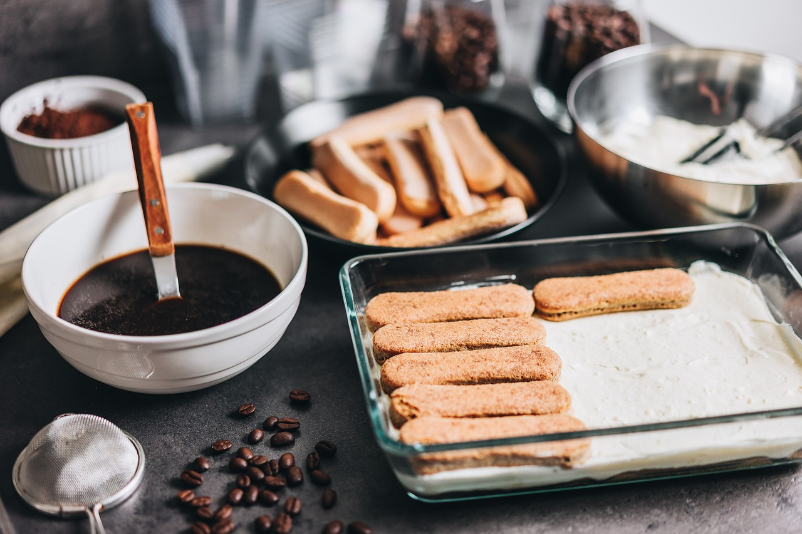

Welcome to Little Italy Pastries, where we offer a delightful selection of authentic Italian desserts crafted with care and passion. Indulge in our delicious treats!
From our heavenly tiramisu to our mouthwatering cannoli, each dessert is a testament to the rich culinary tradition of Italy. Using only the finest ingredients, our talented pastry chefs create masterpieces that are as beautiful as they are delicious.
Our healthy, handcrafted desserts are perfect for those who want to satisfy their sweet cravings without compromising on their wellness goals.
Indulge guilt-free in our selection of nutritious treats, including fruit tarts, yogurt parfaits, and sugar-free options. With our commitment to using fresh, wholesome ingredients, you can enjoy the sweetness of our desserts without any added guilt.
Little Italy Pastries is a family-owned and operated bakery located in the heart of Downtown Harvard, IL. Founded by the Rossi family, our recipes have been passed down through multiple generations, each one cherished and perfected over time.
Our journey began in the bustling streets of Naples, Italy, where Nonna Maria first discovered her passion for baking. From there, the tradition continued as each family member contributed their own unique twist to our beloved recipes.
Today, we are proud to bring a taste of Italy to Harvard, offering a wide range of delectable desserts that capture the essence of Italian cuisine. Whether you're craving a classic cannoli or a modern twist on a traditional favorite, we invite you to experience the magic of Little Italy Pastries.